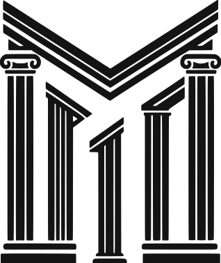
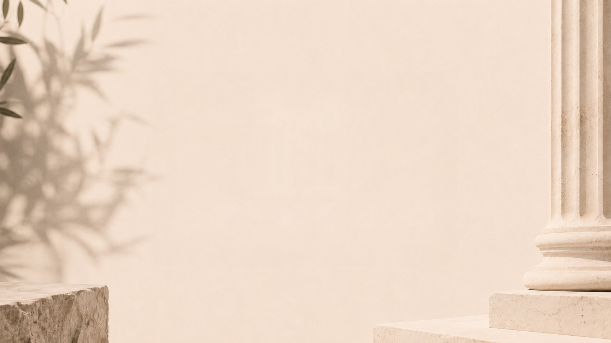
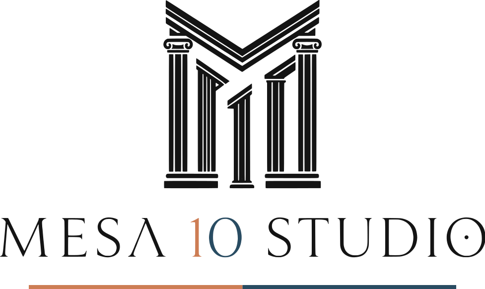

Autónomos, creadores de contenido y pymes
Este plano tampoco. Ni cámara, ni localización, ni actores — lo estás viendo moverse mientras lees.
Todo generado con inteligencia artificial. Lo que no es de la IA es qué contar y dónde cortar.